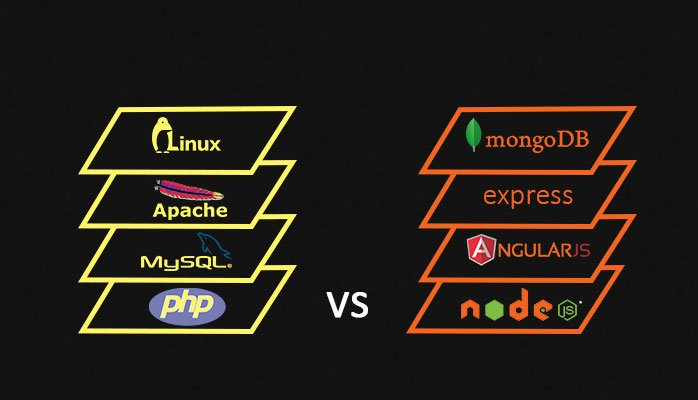
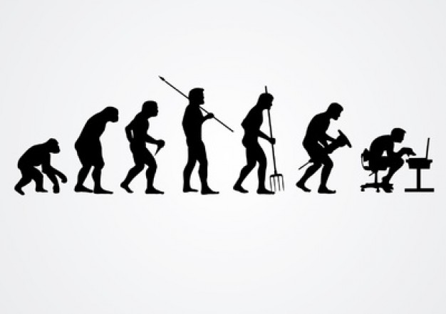

Si yo fuese rey, todo el mundo sabría programar
Carlos J. Gil Bellosta (@gilbellosta )
http://circiter.es - http://datanalytics.com
Soy...
- presidente de la Comunidad R Hispano,
- usuario de R desde hace 16 años,
- autor de paquetes de R de desigual éxito y utilidad y
- pago mi hipoteca con R.
Así que tenéis buenos motivos para no creer nada de lo que os cuente sobre R.
Resumen ejecutivo
- El stack (o pila) analítico
- El rol de la programación en el stack analítico
- El papel de R: fortalezas, debilidades y alternativas
El stack analítico
Esto lo sabemos sobradamente

Otros stacks
Stack analítico: componentes
- Inglés
- Sistemas operativos (¡decentes!)
- Redes de ordenadores, HTTP, APIs, JSON,...
- Redes de... ¡colaboradores!
- Editores / IDEs
- Programación
- Librerías de ML
Sistemas operativos
- Windows es problemático
No hay alternativa a UNIX (Linux, macOS) por:
- Integración en el stack
- La nube (Amazon, etc.)
- Hadoop, Spark, etc.
- Docker y similares
Y todo ello consecuencia de que fueron creados por y para hackers.
Tecnologías de internet
- Cada vez existen más servicios vía API
- Tenemos que saber usarlos... ¡y crearlos!
ssh, curl, get, post, endpoint, api, flask, json, scraping, xhr, xpath, http, scp, nat, ip, tcp, port, telnet, apache, nginx, postfix, css,...
Tecnologías de colaboración
- Slack, Telegram, Trello,... pero también
git(y Github, Bitbucket, etc.) ¡Texto!
- Es el formato "universal"
- No formatos binarios: .doc, .xls y similares
- Alternativas: csv (bien formados), markdown, yaml,...
Y recuerda: seas quien seas, casi todo el talento está fuera:
- Blogs, twitter,...
- StackOverflow,...
Editores de texto e IDEs
- Hay que enamorarse y comprometerse seriamente con un editor de texto (VIM, Emacs, Sublime,...)
- No, notepad no es un editor de texto decente
- Hay IDEs muy potentes: RStudio (para R), Spyder (Python),...
- Alternativas modernas: los notebooks (Jupyter, Zeppelin,...)

Programación
Librerías de ml
- Se les da mucha importancia pero son un corolario.
- Si se sabe programar, si se sabe estadística/ML, utilizarlas es simple.
Ejemplos:
- H2O, MLlib, Mahout,...
- Las del mundo del deep learning: Caffe, Torch, Mxnet, TensorFlow, etc.
Programación
Objetivo: poder mantener conversaciones adultas con los ordenadores.
Programación: prerrequisitos
- SQL: es el (seudo-) lenguaje de facto para manipular tablas. Los lenguajes de programación debaten si superarlo o simularlo.
- Regex (expresiones regulares): esenciales para manipular texto.
- ...
Lenguajes para ciencia de datos
R, Python, Scala / Spark
- Todo el mundo habla de lo que los diferencia
¡Pero apenas de lo que tienen en común!
data.frames- Aspectos funcionales
- Pasar de uno a otro es más fácil de lo que parece
Lenguajes ~ metalenguajes + sintaxis
ddply(iris, .(Species), summarize, media = mean(Petal.Length)
iris.groupby(['Species'])['Petal_Length'].mean()
iris.groupBy("Species").agg(mean("Petal_Length"))
La metaoperación es el groupby; el resto es solo sintaxis.
Scala / Spark
- Solo se justifica para datos grandes
- Es el menos exploratorio y el más formal
- Complementa a (más que compite con) R y Python
R
- No es un lenguaje de programación (únicamente)
- Está orientado a la exploración y el prototipado
- No se recomienda en producción
- Es un DSL con aspiraciones de GPL
- Muy completo en términos de herramientas estadísticas y de ML
Python
- Es un lenguaje de programación que puede adaptarse a la exploración
- Más conveniente que R en producción
- Es un GPL con aspiraciones de DSL
- ¡Le faltan tantas cosas (con respecto a R)!
¿Por qué R?
Nota: gran parte de lo que sigue aplica también a Python.
R encaja en el stack analítico
- Está integrado en UNIX/Linux y su manera de hacer las cosas
- Es colaborativo (en el sentido de la catedral y el bazar)
- Interopera con las librerías de ML
- ...
Particularidades de R
- No es (únicamente) un lenguaje de programación
- Está pensado para ser usado interactivamente: como SPSS y otros, pero sin menús
- No es ideal para construir programas largos o ser subido a producción
Sí que lo es para el día a día del analista de datos:
- Reemplaza a Excel, Word (con Rmarkdown),...
- Permite acceder bases de datos SQL, Spark, etc.
- Da acceso a APIs
- Permite realizar manipulaciones avanzadas de datos
- Integra toda la estadística y el ML...
R y datos
Reemplaza a Excel:
- Filtrado, selección, inspección,...
- Tablas dinámicas
Reemplaza, complementa y extiende SQL:
- Cruces (inner, left,...)
- Agrupaciones (group by)
- Funciones analíticas (partition by)
R y documentos: Rmarkdown
Rmarkdown permite generar documentos que:
- Integran texto, capítulos, bullets, negritas, cursivas,...
- Corren pedazos de código en R
Estos pedazos de código:
- Generan gráficos, tablas, etc., que se integran automáticamente en documentos
- Permiten acceder a fuentes externas de datos
R y gráficos
Más sobre R y gráficos
- R ha sido siempre innovador en el mundo de los gráficos estadísticos (desde los 70-80)
latticeyggplot2han servido de inspiración a Python y otros entornos- Y R tampoco es ajeno al boom de los gráficos dinámicos
Shiny
- Sirve para diseminar información estadística
- Incluye los cuadros de mando
- Se ha convertido en una industria en sí mismo
Se pueden ver ejemplos en:
- Shiny Gallery (simples, orientados a aprender Shiny)
- Shiny User Showcase (más elaborados y realistas)
Mi libro
R para profesionales de los datos: una introducción
(Disponible aquí)
El público: profesionales de los datos
- No es académico
- Omite (pero abre el camino a) toda la estadística
Pensado para quienes trabajan diariamente con datos creando informes, gráficos, etc.
- Márketing digital
- Periodismo de datos
- Finanzas
- ...
Mi libro: objetivos
- Reemplazar Excel, Word y otras herramientas ofimáticas
Introducir al lector a:
- Gráficos avanzados
- Informes reproducibles / automáticos
- Shiny
Vale.
... aunque la conversación continúa en: